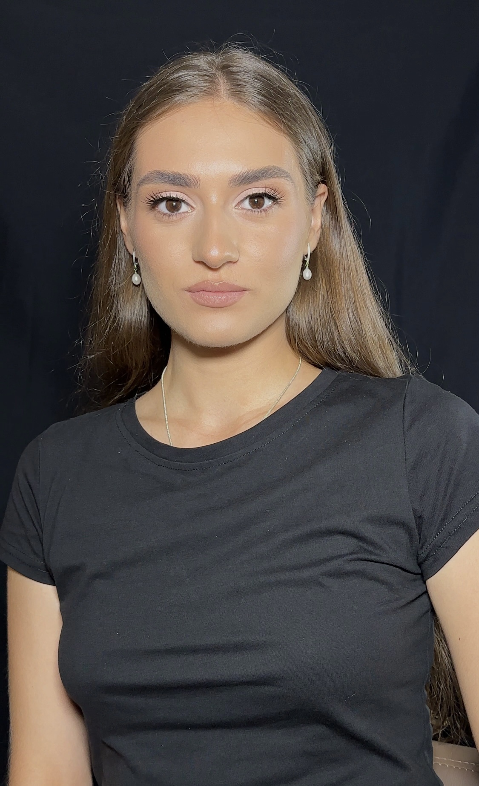

Залевская Влада
Product Manager
Создаю продукты, которые решают реальные проблемы пользователей
Мой профиль
Продуктовые стратегии
Разработка продуктовой стратегии, Roadmap, приоритизация фич
Пользовательские исследования
Проведение пользовательских интервью, A/B тестирование, анализ метрик
Разработка продуктом
Управление бэклогом, работа с командами разработки, Agile/Scrum
Аналитика
Анализ продуктовых метрик, SQL, Google Analytics, построение дашбордов
Ключевые достижения
Полуфиналист кейс-чемпионата CUP RUSSIA'25
Самостоятельно за неделю провела аналитику рынка реферальных программ для МСБ благодаря SWOT-анализу и бенчмаркингу, в результате своевременно были выявлены и устранены недостатки и найдены точки роста в существующей реферальной программе. Сформировала концепцию новой реферальной программы для МСБ от ВТБ, проработала риски и определила способы их снижения.
Финалист кейс-чемпионата CUP IT'25
Самостоятельно за неделю провела аналитику рынка детских дебетовых карт, упаковала в бенчмаркинг, провела количественные исследования в виде социальных опросов, на этом основании выдвинула гипотезы и сформировала концепцию детской дебетовой карты банка ОТП, проработала риски и определила способы их снижения.